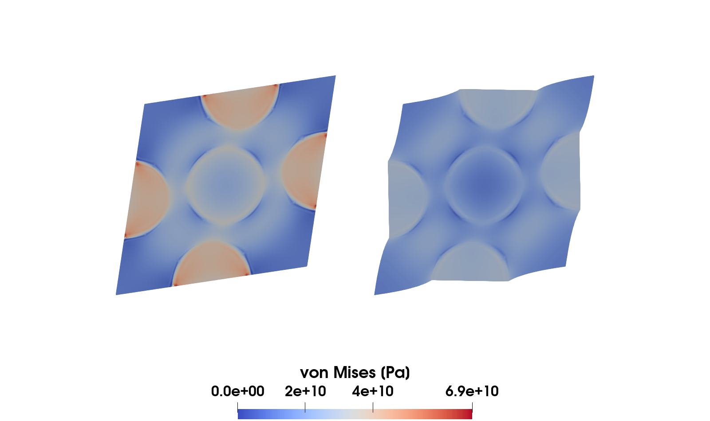
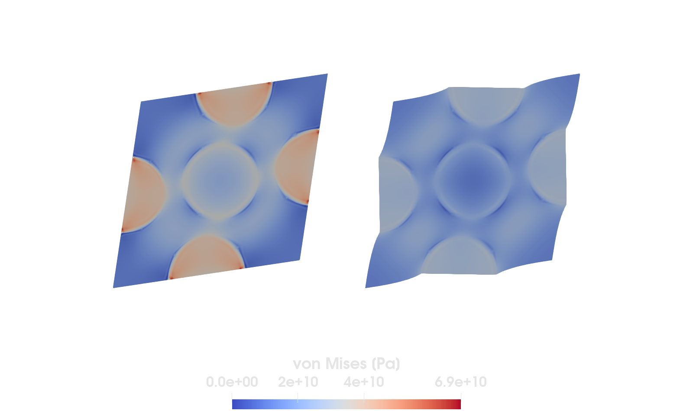

Computational homogenization


Figure 1: von Mises stress in an RVE with 5 stiff inclusions embedded in a softer matrix material that is loaded in shear. The problem is solved by using homogeneous Dirichlet boundary conditions (left) and (strong) periodic boundary conditions (right).
This example is also available as a Jupyter notebook: computational_homogenization.ipynb.
Introduction
In this example we will solve the Representative Volume Element (RVE) problem for computational homogenization of linear elasticity and compute the effective/homogenized stiffness of an RVE with 5 stiff circular inclusions embedded in a softer matrix material (see Figure 1).
It is possible to obtain upper and lower bounds on the stiffness analytically, see for example Rule of mixtures. An upper bound is obtained from the Voigt model, where the strain is assumed to be the same in the two constituents,
\[\mathsf{E}_\mathrm{Voigt} = v_\mathrm{m} \mathsf{E}_\mathrm{m} + (1 - v_\mathrm{m}) \mathsf{E}_\mathrm{i}\]
where $v_\mathrm{m}$ is the volume fraction of the matrix material, and where $\mathsf{E}_\mathrm{m}$ and $\mathsf{E}_\mathrm{i}$ are the individual stiffness for the matrix material and the inclusions, respectively. The lower bound is obtained from the Reuss model, where the stress is assumed to be the same in the two constituents,
\[\mathsf{E}_\mathrm{Reuss} = \left(v_\mathrm{m} \mathsf{E}_\mathrm{m}^{-1} + (1 - v_\mathrm{m}) \mathsf{E}_\mathrm{i}^{-1} \right)^{-1}.\]
However, neither of these assumptions are, in general, very close to the "truth" which is why it is of interest to computationally find the homogenized properties for a given RVE.
The canonical version of the RVE problem can be formulated as follows: For given homogenized field $\bar{\boldsymbol{u}}$, $\bar{\boldsymbol{\varepsilon}} = \boldsymbol{\varepsilon}[\bar{\boldsymbol{u}}]$, find $\boldsymbol{u} \in \mathbb{U}_\Box$, $\boldsymbol{t} \in \mathbb{T}_\Box$ such that
\[\frac{1}{|\Omega_\Box|} \int_{\Omega_\Box}\boldsymbol{\varepsilon}[\delta\boldsymbol{u}] : \mathsf{E} : \boldsymbol{\varepsilon}[\boldsymbol{u}]\ \mathrm{d}\Omega - \frac{1}{|\Omega_\Box|} \int_{\Gamma_\Box}\delta \boldsymbol{u} \cdot \boldsymbol{t}\ \mathrm{d}\Gamma = 0 \quad \forall \delta \boldsymbol{u} \in \mathbb{U}_\Box,\quad (1\mathrm{a})\\ - \frac{1}{|\Omega_\Box|} \int_{\Gamma_\Box}\delta \boldsymbol{t} \cdot \boldsymbol{u}\ \mathrm{d}\Gamma = - \bar{\boldsymbol{\varepsilon}} : \left[ \frac{1}{|\Omega_\Box|} \int_{\Gamma_\Box}\delta \boldsymbol{t} \otimes [\boldsymbol{x} - \bar{\boldsymbol{x}}]\ \mathrm{d}\Gamma \right] \quad \forall \delta \boldsymbol{t} \in \mathbb{T}_\Box, \quad (1\mathrm{b})\]
where $\boldsymbol{u} = \bar{\boldsymbol{\varepsilon}} \cdot [\boldsymbol{x} - \bar{\boldsymbol{x}}] + \boldsymbol{u}^\mu$, where $\Omega_\Box$ and $|\Omega_\Box|$ are the domain and volume of the RVE, where $\Gamma_\Box$ is the boundary, and where $\mathbb{U}_\Box$, $\mathbb{T}_\Box$ are set of "sufficiently regular" functions defined on the RVE.
This system is not solvable without introducing extra restrictions on $\mathbb{U}_\Box$, $\mathbb{T}_\Box$. In this example we will consider the common cases of Dirichlet boundary conditions and (strong) periodic boundary conditions.
Dirichlet boundary conditions
We can introduce the more restrictive sets of $\mathbb{U}_\Box$:
\[\begin{align*} \mathbb{U}_\Box^\mathrm{D} &:= \left\{\boldsymbol{u} \in \mathbb{U}_\Box|\ \boldsymbol{u} = \bar{\boldsymbol{\varepsilon}} \cdot [\boldsymbol{x} - \bar{\boldsymbol{x}}] \ \mathrm{on}\ \Gamma_\Box\right\},\\ \mathbb{U}_\Box^{\mathrm{D},0} &:= \left\{\boldsymbol{u} \in \mathbb{U}_\Box|\ \boldsymbol{u} = \boldsymbol{0}\ \mathrm{on}\ \Gamma_\Box\right\}, \end{align*}\]
and use these as trial and test sets to obtain a solvable RVE problem pertaining to Dirichlet boundary conditions. Eq. $(1\mathrm{b})$ is trivially fulfilled, the second term of Eq. $(1\mathrm{a})$ vanishes, and we are left with the following problem: Find $\boldsymbol{u} \in \mathbb{U}_\Box^\mathrm{D}$ that solve
\[\frac{1}{|\Omega_\Box|} \int_{\Omega_\Box}\boldsymbol{\varepsilon}[\delta\boldsymbol{u}] : \mathsf{E} : \boldsymbol{\varepsilon}[\boldsymbol{u}]\ \mathrm{d}\Omega = 0 \quad \forall \delta \boldsymbol{u} \in \mathbb{U}_\Box^{\mathrm{D},0}.\]
Note that, since $\boldsymbol{u} = \bar{\boldsymbol{\varepsilon}} \cdot [\boldsymbol{x} - \bar{\boldsymbol{x}}] + \boldsymbol{u}^\mu$, this problem is equivalent to solving for $\boldsymbol{u}^\mu \in \mathbb{U}_\Box^{\mathrm{D},0}$, which is what we will do in the implementation.
Periodic boundary conditions
The RVE problem pertaining to periodic boundary conditions is obtained by restricting $\boldsymbol{u}^\mu$ to be periodic, and $\boldsymbol{t}$ anti-periodic across the RVE. Similarly as for Dirichlet boundary conditions, Eq. $(1\mathrm{b})$ is directly fulfilled, and the second term in Eq. $(1\mathrm{a})$ vanishes, with these restrictions, and we are left with the following problem: Find $\boldsymbol{u}^\mu \in \mathbb{U}_\Box^{\mathrm{P},0}$ such that
\[\frac{1}{|\Omega_\Box|} \int_{\Omega_\Box}\boldsymbol{\varepsilon}[\delta\boldsymbol{u}] : \mathsf{E} : (\bar{\boldsymbol{\varepsilon}} + \boldsymbol{\varepsilon} [\boldsymbol{u}^\mu])\ \mathrm{d}\Omega = 0 \quad \forall \delta \boldsymbol{u} \in \mathbb{U}_\Box^{\mathrm{P},0},\]
where
\[\mathbb{U}_\Box^{\mathrm{P},0} := \left\{\boldsymbol{u} \in \mathbb{U}_\Box| \ \llbracket \boldsymbol{u} \rrbracket_\Box = \boldsymbol{0} \ \mathrm{on}\ \Gamma_\Box^+\right\}\]
where $\llbracket \bullet \rrbracket_\Box = \bullet(\boldsymbol{x}^+) - \bullet(\boldsymbol{x}^-)$ defines the "jump" over the RVE, i.e. the difference between the value on the image part $\Gamma_\Box^+$ (coordinate $\boldsymbol{x}^+$) and the mirror part $\Gamma_\Box^-$ (coordinate $\boldsymbol{x}^-$) of the boundary. To make sure this restriction holds in a strong sense we need a periodic mesh.
Note that it would be possible to solve for the total $\boldsymbol{u}$ directly by instead enforcing the jump to be equal to the jump in the macroscopic part, $\boldsymbol{u}^\mathrm{M}$, i.e.
\[\llbracket \boldsymbol{u} \rrbracket_\Box = \llbracket \boldsymbol{u}^\mathrm{M} \rrbracket_\Box = \llbracket \bar{\boldsymbol{\varepsilon}} \cdot [\boldsymbol{x} - \bar{\boldsymbol{x}}] \rrbracket_\Box = \bar{\boldsymbol{\varepsilon}} \cdot [\boldsymbol{x}^+ - \boldsymbol{x}^-].\]
Homogenization of effective properties
In general it is necessary to compute the homogenized stress and the stiffness on the fly, but since we in this example consider linear elasticity it is possible to compute the effective properties once and for all for a given RVE configuration. We do this by computing sensitivity fields for every independent strain component (6 in 3D, 3 in 2D). Thus, for a 2D problem, as in the implementation below, we compute sensitivities $\hat{\boldsymbol{u}}_{11}$, $\hat{\boldsymbol{u}}_{22}$, and $\hat{\boldsymbol{u}}_{12} = \hat{\boldsymbol{u}}_{21}$ by using
\[\bar{\boldsymbol{\varepsilon}} = \begin{pmatrix}1 & 0\\ 0 & 0\end{pmatrix}, \quad \bar{\boldsymbol{\varepsilon}} = \begin{pmatrix}0 & 0\\ 0 & 1\end{pmatrix}, \quad \bar{\boldsymbol{\varepsilon}} = \begin{pmatrix}0 & 0.5\\ 0.5 & 0\end{pmatrix}\]
as the input to the RVE problem. When the sensitivities are solved we can compute the entries of the homogenized stiffness as follows
\[\mathsf{E}_{ijkl} = \frac{\partial\ \bar{\sigma}_{ij}}{\partial\ \bar{\varepsilon}_{kl}} = \bar{\sigma}_{ij}(\hat{\boldsymbol{u}}_{kl}),\]
where the homogenized stress, $\bar{\boldsymbol{\sigma}}(\boldsymbol{u})$, is computed as the volume average of the stress in the RVE, i.e.
\[\bar{\boldsymbol{\sigma}}(\boldsymbol{u}) := \frac{1}{|\Omega_\Box|} \int_{\Omega_\Box} \boldsymbol{\sigma}\ \mathrm{d}\Omega = \frac{1}{|\Omega_\Box|} \int_{\Omega_\Box} \mathsf{E} : \boldsymbol{\varepsilon}[\boldsymbol{u}]\ \mathrm{d}\Omega.\]
Commented program
Now we will see how this can be implemented in Ferrite. What follows is a program with comments in between which describe the different steps. You can also find the same program without comments at the end of the page, see Plain program.
using Ferrite, SparseArrays, LinearAlgebraWe first load the mesh file "periodic-rve.msh" (or "periodic-rve-coarse.msh" for a coarser mesh). The mesh is generated with Gmsh, and we read it in as a Ferrite Grid using the FerriteGmsh.jl package:
using FerriteGmshusing Downloads: Downloadsmeshfile = "periodic-rve.msh"isfile(meshfile) || Downloads.download(Ferrite.asset_url(meshfile), meshfile)grid = togrid(meshfile)Grid{2, Triangle, Float64} with 186 Triangle cells and 112 nodesNext we construct the interpolation and quadrature rule, and combining them into cellvalues as usual:
dim = 2ip = Lagrange{RefTriangle, 1}()^dimqr = QuadratureRule{RefTriangle}(2)cellvalues = CellValues(qr, ip);We define a dof handler with a displacement field :u:
dh = DofHandler(grid)add!(dh, :u, ip)close!(dh);Now we need to define boundary conditions. As discussed earlier we will solve the problem using (i) homogeneous Dirichlet boundary conditions, and (ii) periodic Dirichlet boundary conditions. We construct two different constraint handlers, one for each case. The Dirichlet boundary condition we have seen in many other examples. Here we simply define the condition that the field, :u, should have both components prescribed to 0 on the full boundary:
ch_dirichlet = ConstraintHandler(dh)dirichlet = Dirichlet( :u, union(getfacetset.(Ref(grid), ["left", "right", "top", "bottom"])...), (x, t) -> [0, 0], [1, 2])add!(ch_dirichlet, dirichlet)close!(ch_dirichlet)update!(ch_dirichlet, 0.0)For periodic boundary conditions we use the PeriodicDirichlet constraint type, which is very similar to the Dirichlet type, but instead of a passing a facetset we pass a vector with "facet pairs", i.e. the mapping between mirror and image parts of the boundary. In this example the "left" and "bottom" boundaries are mirrors, and the "right" and "top" boundaries are the images.
ch_periodic = ConstraintHandler(dh);periodic = PeriodicDirichlet( :u, ["left" => "right", "bottom" => "top"], [1, 2])add!(ch_periodic, periodic)close!(ch_periodic)update!(ch_periodic, 0.0)This will now constrain any degrees of freedom located on the mirror boundaries to the matching degree of freedom on the image boundaries. Internally this will create a number of AffineConstraints of the form u_i = 1 * u_j + 0:
a = AffineConstraint(u_m, [u_i => 1], 0)where u_m is the degree of freedom on the mirror and u_i the matching one on the image part. PeriodicDirichlet is thus simply just a more convenient way of constructing such affine constraints since it computes the degree of freedom mapping automatically.
To simplify things we group the constraint handlers into a named tuple
ch = (dirichlet = ch_dirichlet, periodic = ch_periodic);We can now construct the sparse matrix. Note that, since we are using affine constraints, which need to modify the matrix sparsity pattern in order to account for the constraint equations, we construct the matrix for the periodic case by passing both the dof handler and the constraint handler.
K = ( dirichlet = allocate_matrix(dh), periodic = allocate_matrix(dh, ch.periodic),);We define the fourth order elasticity tensor for the matrix material, and define the inclusions to have 10 times higher stiffness
λ, μ = 1.0e10, 7.0e9 # Lamé parametersδ(i, j) = i == j ? 1.0 : 0.0Em = SymmetricTensor{4, 2}( (i, j, k, l) -> λ * δ(i, j) * δ(k, l) + μ * (δ(i, k) * δ(j, l) + δ(i, l) * δ(j, k)))Ei = 10 * Em;As mentioned above, in order to compute the apparent/homogenized stiffness we will solve the problem repeatedly with different macroscale strain tensors to compute the sensitivity of the homogenized stress, $\bar{\boldsymbol{\sigma}}$, w.r.t. the macroscopic strain, $\bar{\boldsymbol{\varepsilon}}$. The corresponding unit strains are defined below, and will result in three different right-hand-sides:
εᴹ = [ SymmetricTensor{2, 2}([1.0 0.0; 0.0 0.0]), # ε_11 loading SymmetricTensor{2, 2}([0.0 0.0; 0.0 1.0]), # ε_22 loading SymmetricTensor{2, 2}([0.0 0.5; 0.5 0.0]), # ε_12/ε_21 loading];The assembly function is nothing strange, and in particular there is no impact from the choice of boundary conditions, so the same function can be used for both cases. Since we want to solve the system 3 times, once for each macroscopic strain component, we assemble 3 right-hand-sides.
function doassemble!(cellvalues::CellValues, K::SparseMatrixCSC, dh::DofHandler, εᴹ, Ei, Em) n_basefuncs = getnbasefunctions(cellvalues) ndpc = ndofs_per_cell(dh) Ke = zeros(ndpc, ndpc) fe = zeros(ndpc, length(εᴹ)) f = zeros(ndofs(dh), length(εᴹ)) assembler = start_assemble(K) inclusions = getcellset(dh.grid, "inclusions") for cell in CellIterator(dh) E = cellid(cell) in inclusions ? Ei : Em reinit!(cellvalues, cell) fill!(Ke, 0) fill!(fe, 0) for q_point in 1:getnquadpoints(cellvalues) dΩ = getdetJdV(cellvalues, q_point) for i in 1:n_basefuncs δεi = shape_symmetric_gradient(cellvalues, q_point, i) for j in 1:n_basefuncs δεj = shape_symmetric_gradient(cellvalues, q_point, j) Ke[i, j] += (δεi ⊡ E ⊡ δεj) * dΩ end for (rhs, ε) in enumerate(εᴹ) σᴹ = E ⊡ ε fe[i, rhs] += (- δεi ⊡ σᴹ) * dΩ end end end cdofs = celldofs(cell) assemble!(assembler, cdofs, Ke) f[cdofs, :] .+= fe end return fend;We can now assemble the system. The assembly function modifies the matrix in-place, but return the right hand side(s) which we collect in another named tuple.
rhs = ( dirichlet = doassemble!(cellvalues, K.dirichlet, dh, εᴹ, Ei, Em), periodic = doassemble!(cellvalues, K.periodic, dh, εᴹ, Ei, Em),);The next step is to solve the systems. Since application of boundary conditions, using the apply! function, modifies both the matrix and the right hand sides we can not use it directly in this case since we want to reuse the matrix again for the next right hand sides. We could of course re-assemble the matrix for every right hand side, but that would not be very efficient. Instead we will use the get_rhs_data function, together with apply_rhs! in a later step. This will extract the necessary data from the matrix such that we can apply it for all the different right hand sides. Note that we call apply! with just the matrix and no right hand side.
rhsdata = ( dirichlet = get_rhs_data(ch.dirichlet, K.dirichlet), periodic = get_rhs_data(ch.periodic, K.periodic),)apply!(K.dirichlet, ch.dirichlet)apply!(K.periodic, ch.periodic)We can now solve the problem(s). Note that we only use apply_rhs! in the loops below. The boundary conditions are already applied to the matrix above, so we only need to modify the right hand side.
u = ( dirichlet = Vector{Float64}[], periodic = Vector{Float64}[],)for i in 1:size(rhs.dirichlet, 2) rhs_i = @view rhs.dirichlet[:, i] # Extract this RHS apply_rhs!(rhsdata.dirichlet, rhs_i, ch.dirichlet) # Apply BC u_i = cholesky(Symmetric(K.dirichlet)) \ rhs_i # Solve apply!(u_i, ch.dirichlet) # Apply BC on the solution push!(u.dirichlet, u_i) # Save the solution vectorendfor i in 1:size(rhs.periodic, 2) rhs_i = @view rhs.periodic[:, i] # Extract this RHS apply_rhs!(rhsdata.periodic, rhs_i, ch.periodic) # Apply BC u_i = cholesky(Symmetric(K.periodic)) \ rhs_i # Solve apply!(u_i, ch.periodic) # Apply BC on the solution push!(u.periodic, u_i) # Save the solution vectorendWhen the solution(s) are known we can compute the averaged stress, $\bar{\boldsymbol{\sigma}}$ in the RVE. We define a function that does this, and also returns the von Mises stress in every quadrature point for visualization.
function compute_stress(cellvalues::CellValues, dh::DofHandler, u, εᴹ, Ei, Em) σvM_qpdata = zeros(getnquadpoints(cellvalues), getncells(dh.grid)) σ̄Ω = zero(SymmetricTensor{2, 2}) Ω = 0.0 # Total volume inclusions = getcellset(dh.grid, "inclusions") for cell in CellIterator(dh) E = cellid(cell) in inclusions ? Ei : Em reinit!(cellvalues, cell) ue = u[celldofs(cell)] for q_point in 1:getnquadpoints(cellvalues) dΩ = getdetJdV(cellvalues, q_point) εμ = function_symmetric_gradient(cellvalues, q_point, ue) σ = E ⊡ (εᴹ + εμ) σvM_qpdata[q_point, cellid(cell)] = sqrt(3 / 2 * dev(σ) ⊡ dev(σ)) Ω += dΩ # Update total volume σ̄Ω += σ * dΩ # Update integrated stress end end σ̄ = σ̄Ω / Ω return σvM_qpdata, σ̄end;We now compute the homogenized stress and von Mises stress for all cases
σ̄ = ( dirichlet = SymmetricTensor{2, 2}[], periodic = SymmetricTensor{2, 2}[],)σ = ( dirichlet = Vector{Float64}[], periodic = Vector{Float64}[],)projector = L2Projector(ip, grid)for i in 1:3 σ_qp, σ̄_i = compute_stress(cellvalues, dh, u.dirichlet[i], εᴹ[i], Ei, Em) proj = project(projector, σ_qp, qr) push!(σ.dirichlet, proj) push!(σ̄.dirichlet, σ̄_i)endfor i in 1:3 σ_qp, σ̄_i = compute_stress(cellvalues, dh, u.periodic[i], εᴹ[i], Ei, Em) proj = project(projector, σ_qp, qr) push!(σ.periodic, proj) push!(σ̄.periodic, σ̄_i)endThe remaining thing is to compute the homogenized stiffness. As mentioned in the introduction we can find all the components from the average stress of the sensitivity fields that we have solved for
\[\mathsf{E}_{ijkl} = \bar{\sigma}_{ij}(\hat{\boldsymbol{u}}_{kl}).\]
So we have now already computed all the components, and just need to gather the data in a fourth order tensor:
E_dirichlet = SymmetricTensor{4, 2}() do i, j, k, l if k == l == 1 σ̄.dirichlet[1][i, j] # ∂σ∂ε_**11 elseif k == l == 2 σ̄.dirichlet[2][i, j] # ∂σ∂ε_**22 else σ̄.dirichlet[3][i, j] # ∂σ∂ε_**12 and ∂σ∂ε_**21 endendE_periodic = SymmetricTensor{4, 2}() do i, j, k, l if k == l == 1 σ̄.periodic[1][i, j] elseif k == l == 2 σ̄.periodic[2][i, j] else σ̄.periodic[3][i, j] endend2×2×2×2 SymmetricTensor{4, 2, Float64, 9}:
[:, :, 1, 1] =
4.30443e10 -809961.0
-809961.0 1.43401e10
[:, :, 2, 1] =
-809961.0 1.16827e10
1.16827e10 -2.18543e6
[:, :, 1, 2] =
-809961.0 1.16827e10
1.16827e10 -2.18543e6
[:, :, 2, 2] =
1.43401e10 -2.18543e6
-2.18543e6 4.30725e10We can check that the results are what we expect, namely that the stiffness with Dirichlet boundary conditions is higher than when using periodic boundary conditions, and that the Reuss assumption is a lower bound, and the Voigt assumption an upper bound. We first compute the volume fraction of the matrix, and then the Voigt and Reuss bounds:
function matrix_volume_fraction(grid, cellvalues) V = 0.0 # Total volume Vm = 0.0 # Volume of the matrix inclusions = getcellset(grid, "inclusions") for c in CellIterator(grid) reinit!(cellvalues, c) is_matrix = !(cellid(c) in inclusions) for qp in 1:getnquadpoints(cellvalues) dΩ = getdetJdV(cellvalues, qp) V += dΩ if is_matrix Vm += dΩ end end end return Vm / Vendvm = matrix_volume_fraction(grid, cellvalues)0.64796265456868E_voigt = vm * Em + (1 - vm) * EiE_reuss = inv(vm * inv(Em) + (1 - vm) * inv(Ei));We can now compare the different computed stiffness tensors. We expect $E_\mathrm{Reuss} \leq E_\mathrm{PeriodicBC} \leq E_\mathrm{DirichletBC} \leq E_\mathrm{Voigt}$. A simple thing to compare are the eigenvalues of the tensors. Here we look at the first eigenvalue:
ev = (first ∘ eigvals).((E_reuss, E_periodic, E_dirichlet, E_voigt))round.(ev; digits = -8)(2.05e10, 2.34e10, 2.82e10, 5.84e10)Finally, we export the solution and the stress field to a VTK file. For the export we also compute the macroscopic part of the displacement.
uM = zeros(ndofs(dh))VTKGridFile("homogenization", dh) do vtk for i in 1:3 # Compute macroscopic solution apply_analytical!(uM, dh, :u, x -> εᴹ[i] ⋅ x) # Dirichlet write_solution(vtk, dh, uM + u.dirichlet[i], "_dirichlet_$i") write_projection(vtk, projector, σ.dirichlet[i], "σvM_dirichlet_$i") # Periodic write_solution(vtk, dh, uM + u.periodic[i], "_periodic_$i") write_projection(vtk, projector, σ.periodic[i], "σvM_periodic_$i") endend;Plain program
Here follows a version of the program without any comments. The file is also available here: computational_homogenization.jl.
using Ferrite, SparseArrays, LinearAlgebrausing FerriteGmshusing Downloads: Downloadsmeshfile = "periodic-rve.msh"isfile(meshfile) || Downloads.download(Ferrite.asset_url(meshfile), meshfile)grid = togrid(meshfile)dim = 2ip = Lagrange{RefTriangle, 1}()^dimqr = QuadratureRule{RefTriangle}(2)cellvalues = CellValues(qr, ip);dh = DofHandler(grid)add!(dh, :u, ip)close!(dh);ch_dirichlet = ConstraintHandler(dh)dirichlet = Dirichlet( :u, union(getfacetset.(Ref(grid), ["left", "right", "top", "bottom"])...), (x, t) -> [0, 0], [1, 2])add!(ch_dirichlet, dirichlet)close!(ch_dirichlet)update!(ch_dirichlet, 0.0)ch_periodic = ConstraintHandler(dh);periodic = PeriodicDirichlet( :u, ["left" => "right", "bottom" => "top"], [1, 2])add!(ch_periodic, periodic)close!(ch_periodic)update!(ch_periodic, 0.0)ch = (dirichlet = ch_dirichlet, periodic = ch_periodic);K = ( dirichlet = allocate_matrix(dh), periodic = allocate_matrix(dh, ch.periodic),);λ, μ = 1.0e10, 7.0e9 # Lamé parametersδ(i, j) = i == j ? 1.0 : 0.0Em = SymmetricTensor{4, 2}( (i, j, k, l) -> λ * δ(i, j) * δ(k, l) + μ * (δ(i, k) * δ(j, l) + δ(i, l) * δ(j, k)))Ei = 10 * Em;εᴹ = [ SymmetricTensor{2, 2}([1.0 0.0; 0.0 0.0]), # ε_11 loading SymmetricTensor{2, 2}([0.0 0.0; 0.0 1.0]), # ε_22 loading SymmetricTensor{2, 2}([0.0 0.5; 0.5 0.0]), # ε_12/ε_21 loading];function doassemble!(cellvalues::CellValues, K::SparseMatrixCSC, dh::DofHandler, εᴹ, Ei, Em) n_basefuncs = getnbasefunctions(cellvalues) ndpc = ndofs_per_cell(dh) Ke = zeros(ndpc, ndpc) fe = zeros(ndpc, length(εᴹ)) f = zeros(ndofs(dh), length(εᴹ)) assembler = start_assemble(K) inclusions = getcellset(dh.grid, "inclusions") for cell in CellIterator(dh) E = cellid(cell) in inclusions ? Ei : Em reinit!(cellvalues, cell) fill!(Ke, 0) fill!(fe, 0) for q_point in 1:getnquadpoints(cellvalues) dΩ = getdetJdV(cellvalues, q_point) for i in 1:n_basefuncs δεi = shape_symmetric_gradient(cellvalues, q_point, i) for j in 1:n_basefuncs δεj = shape_symmetric_gradient(cellvalues, q_point, j) Ke[i, j] += (δεi ⊡ E ⊡ δεj) * dΩ end for (rhs, ε) in enumerate(εᴹ) σᴹ = E ⊡ ε fe[i, rhs] += (- δεi ⊡ σᴹ) * dΩ end end end cdofs = celldofs(cell) assemble!(assembler, cdofs, Ke) f[cdofs, :] .+= fe end return fend;rhs = ( dirichlet = doassemble!(cellvalues, K.dirichlet, dh, εᴹ, Ei, Em), periodic = doassemble!(cellvalues, K.periodic, dh, εᴹ, Ei, Em),);rhsdata = ( dirichlet = get_rhs_data(ch.dirichlet, K.dirichlet), periodic = get_rhs_data(ch.periodic, K.periodic),)apply!(K.dirichlet, ch.dirichlet)apply!(K.periodic, ch.periodic)u = ( dirichlet = Vector{Float64}[], periodic = Vector{Float64}[],)for i in 1:size(rhs.dirichlet, 2) rhs_i = @view rhs.dirichlet[:, i] # Extract this RHS apply_rhs!(rhsdata.dirichlet, rhs_i, ch.dirichlet) # Apply BC u_i = cholesky(Symmetric(K.dirichlet)) \ rhs_i # Solve apply!(u_i, ch.dirichlet) # Apply BC on the solution push!(u.dirichlet, u_i) # Save the solution vectorendfor i in 1:size(rhs.periodic, 2) rhs_i = @view rhs.periodic[:, i] # Extract this RHS apply_rhs!(rhsdata.periodic, rhs_i, ch.periodic) # Apply BC u_i = cholesky(Symmetric(K.periodic)) \ rhs_i # Solve apply!(u_i, ch.periodic) # Apply BC on the solution push!(u.periodic, u_i) # Save the solution vectorendfunction compute_stress(cellvalues::CellValues, dh::DofHandler, u, εᴹ, Ei, Em) σvM_qpdata = zeros(getnquadpoints(cellvalues), getncells(dh.grid)) σ̄Ω = zero(SymmetricTensor{2, 2}) Ω = 0.0 # Total volume inclusions = getcellset(dh.grid, "inclusions") for cell in CellIterator(dh) E = cellid(cell) in inclusions ? Ei : Em reinit!(cellvalues, cell) ue = u[celldofs(cell)] for q_point in 1:getnquadpoints(cellvalues) dΩ = getdetJdV(cellvalues, q_point) εμ = function_symmetric_gradient(cellvalues, q_point, ue) σ = E ⊡ (εᴹ + εμ) σvM_qpdata[q_point, cellid(cell)] = sqrt(3 / 2 * dev(σ) ⊡ dev(σ)) Ω += dΩ # Update total volume σ̄Ω += σ * dΩ # Update integrated stress end end σ̄ = σ̄Ω / Ω return σvM_qpdata, σ̄end;σ̄ = ( dirichlet = SymmetricTensor{2, 2}[], periodic = SymmetricTensor{2, 2}[],)σ = ( dirichlet = Vector{Float64}[], periodic = Vector{Float64}[],)projector = L2Projector(ip, grid)for i in 1:3 σ_qp, σ̄_i = compute_stress(cellvalues, dh, u.dirichlet[i], εᴹ[i], Ei, Em) proj = project(projector, σ_qp, qr) push!(σ.dirichlet, proj) push!(σ̄.dirichlet, σ̄_i)endfor i in 1:3 σ_qp, σ̄_i = compute_stress(cellvalues, dh, u.periodic[i], εᴹ[i], Ei, Em) proj = project(projector, σ_qp, qr) push!(σ.periodic, proj) push!(σ̄.periodic, σ̄_i)endE_dirichlet = SymmetricTensor{4, 2}() do i, j, k, l if k == l == 1 σ̄.dirichlet[1][i, j] # ∂σ∂ε_**11 elseif k == l == 2 σ̄.dirichlet[2][i, j] # ∂σ∂ε_**22 else σ̄.dirichlet[3][i, j] # ∂σ∂ε_**12 and ∂σ∂ε_**21 endendE_periodic = SymmetricTensor{4, 2}() do i, j, k, l if k == l == 1 σ̄.periodic[1][i, j] elseif k == l == 2 σ̄.periodic[2][i, j] else σ̄.periodic[3][i, j] endendfunction matrix_volume_fraction(grid, cellvalues) V = 0.0 # Total volume Vm = 0.0 # Volume of the matrix inclusions = getcellset(grid, "inclusions") for c in CellIterator(grid) reinit!(cellvalues, c) is_matrix = !(cellid(c) in inclusions) for qp in 1:getnquadpoints(cellvalues) dΩ = getdetJdV(cellvalues, qp) V += dΩ if is_matrix Vm += dΩ end end end return Vm / Vendvm = matrix_volume_fraction(grid, cellvalues)E_voigt = vm * Em + (1 - vm) * EiE_reuss = inv(vm * inv(Em) + (1 - vm) * inv(Ei));ev = (first ∘ eigvals).((E_reuss, E_periodic, E_dirichlet, E_voigt))round.(ev; digits = -8)uM = zeros(ndofs(dh))VTKGridFile("homogenization", dh) do vtk for i in 1:3 # Compute macroscopic solution apply_analytical!(uM, dh, :u, x -> εᴹ[i] ⋅ x) # Dirichlet write_solution(vtk, dh, uM + u.dirichlet[i], "_dirichlet_$i") write_projection(vtk, projector, σ.dirichlet[i], "σvM_dirichlet_$i") # Periodic write_solution(vtk, dh, uM + u.periodic[i], "_periodic_$i") write_projection(vtk, projector, σ.periodic[i], "σvM_periodic_$i") endend;This page was generated using Literate.jl.